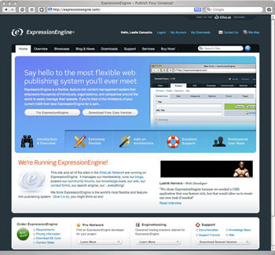
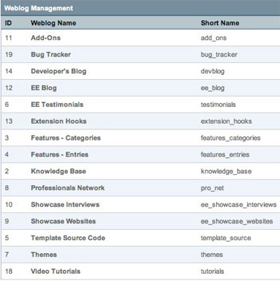

Weblogs / Sections
Note: In our user guide and throughout the program you'll find the use of the word "weblog". If you are not using EE to manage a weblog then simply substitute the word "section" for it instead. A "weblog" in ExpressionEngine can be thought of as a "section" of your site.
In ExpressionEngine terminology, a Weblog is simply a container for information stored in the database. This is a very important concept, and one which may take a little getting used to, especially if you are coming from another content management system.
In most other publishing systems a "weblog" refers to everything: information and the pages that display the information. Not so in ExpressionEngine. A Weblog is only the information, separate and independent from the pages (which we refer to as Templates). There is no assumed relationship between a Weblog and one of your web pages. Several Weblogs can all live happily on a single page. Or you can have a more traditional weblog on its own page. It's your choice. This lets you organize and present information on your site with great flexibility.
Important Concept: A "Weblog" in ExpressionEngine consists of only information (entries, comments, preferences). Templates determine how and where you display your Weblog data. How you mix and match the two is up to you.
Let's take a quick look at how we mix and match weblogs and templates at ExpressionEngine.com.
| 
 |
These are just a few examples of what can be done with ExpressionEngine Weblogs. Because ExpressionEngine makes no assumptions about the placement or format of a Weblog's content, you can present the content of your Weblogs on your pages in thousands of ways, structured and organized in a way that makes the most sense for your content. |